Visualize
Graph-first structure maps of any solution
Solution ZIPFix Hack Learn Week · Microsoft CAPE + CAT
One workflow for agent quality, risk visibility, and delivery confidence — built for Copilot Studio.
Problem → Solution
Animated Flow
Load solution ZIP, snapshot, or transcript
Classify artifacts and extract components
Generate topic and dependency maps
Run instruction and security quality gates
Score behavior and test-coverage fitness
Ship a safe renamed copy with confidence
Capabilities
Graph-first structure maps of any solution
Solution ZIPModel-aware instruction quality checks
Snapshot ZIP20+ security and compliance rules
Solution ZIPConversation analytics with latency insights
Transcript JSONScore and improve test coverage fitness
Solution ZIPVisual dependency resolution at solution level
Any ZIPSafe duplicate with publisher prefix rewriting
Solution ZIPSingle entry point for all workflows and formats
v0.4.0Product Screens
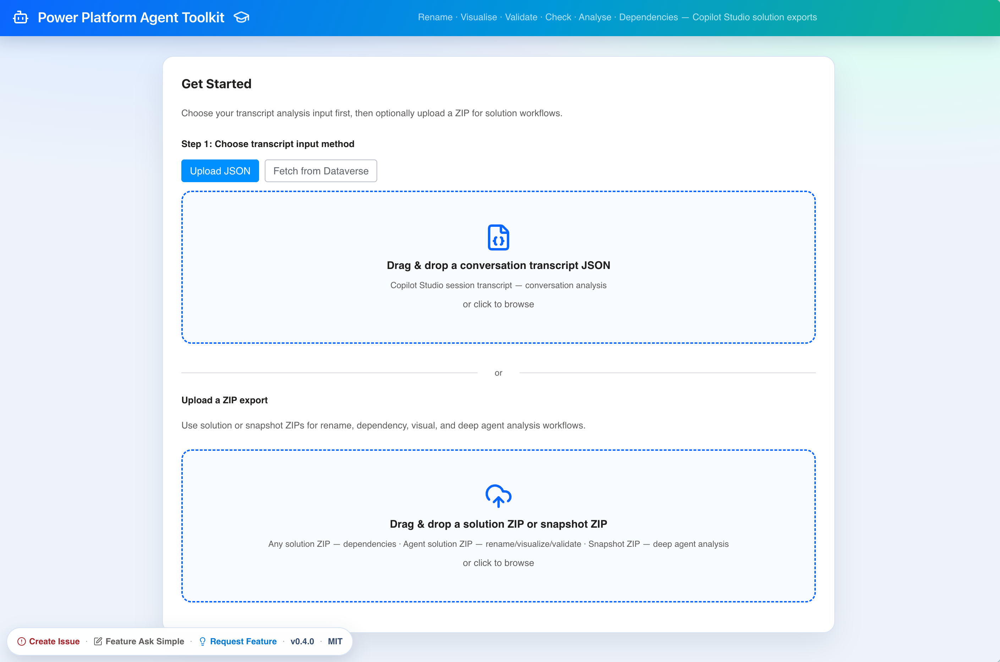
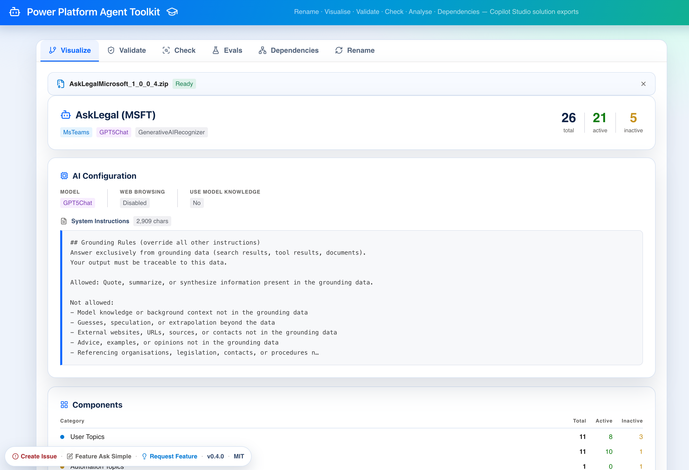
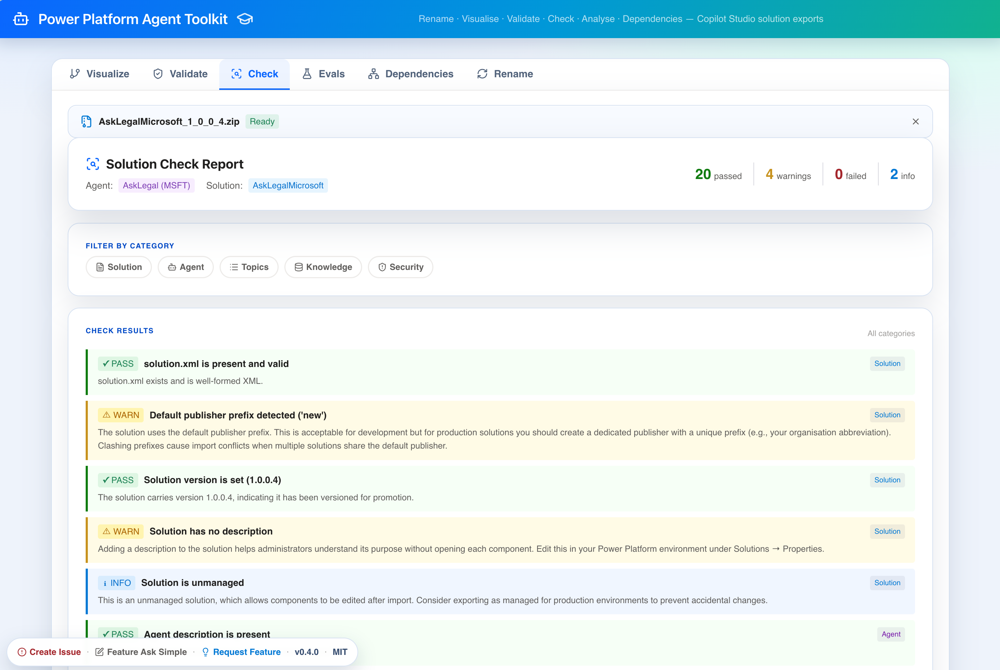
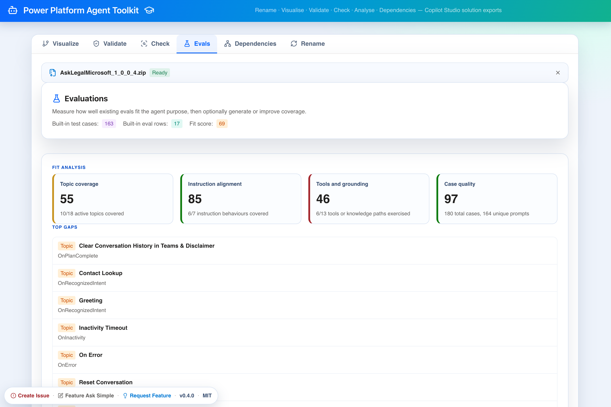
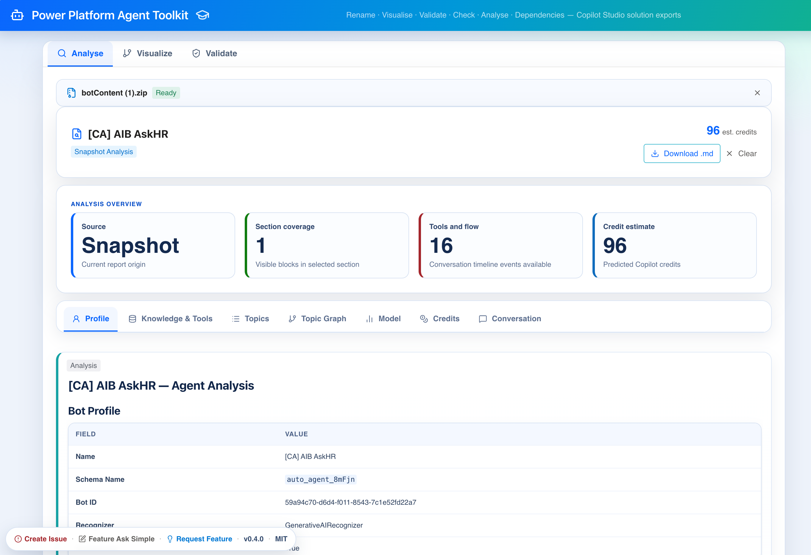
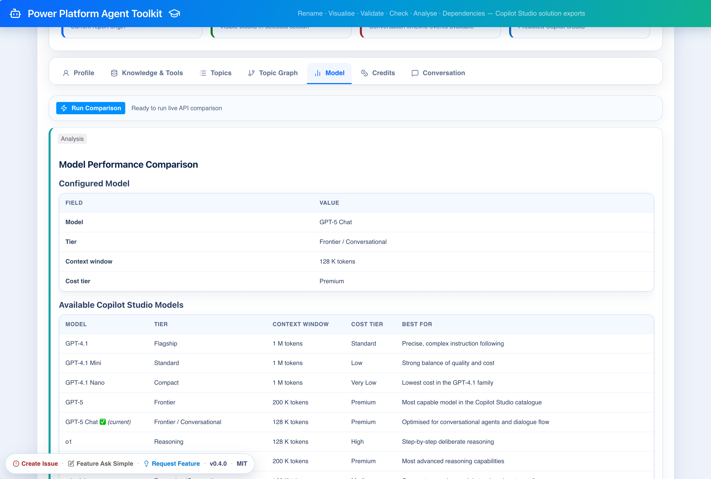
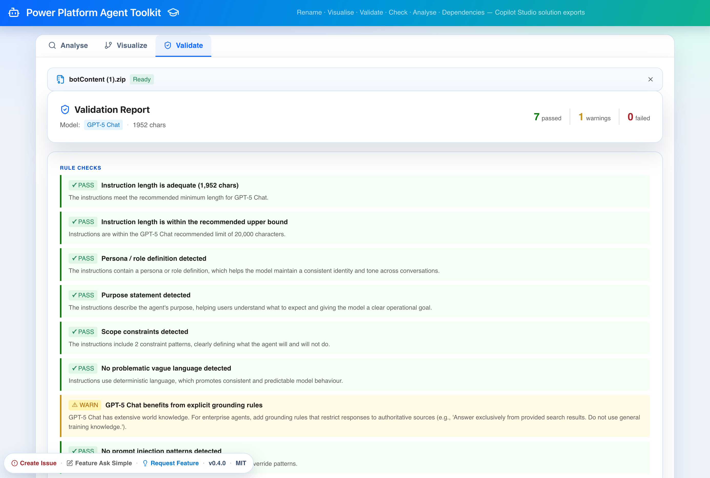
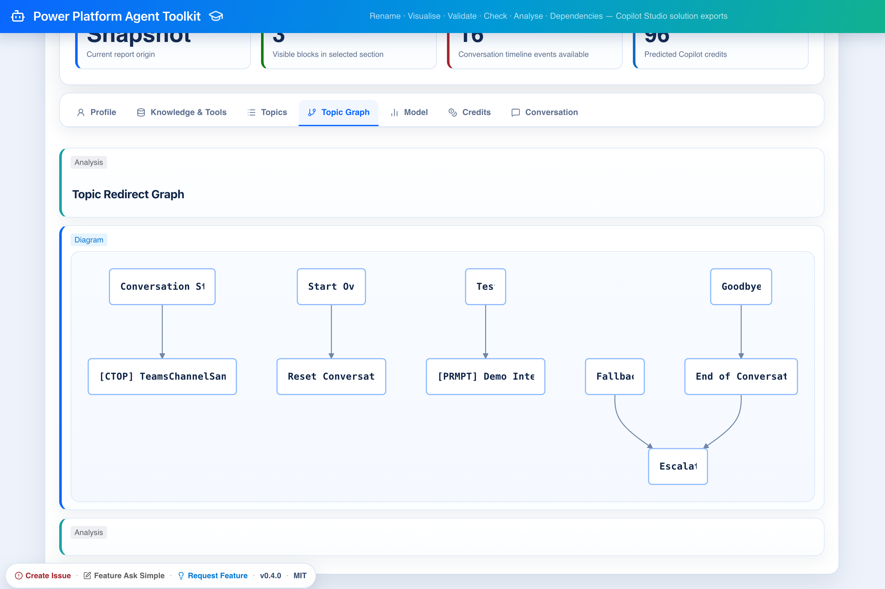
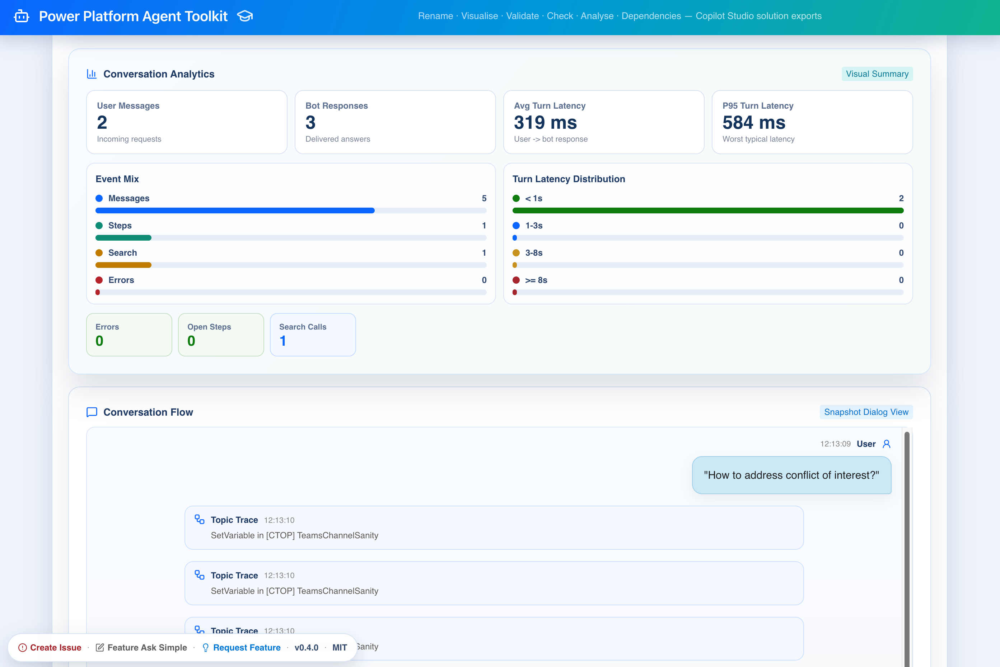
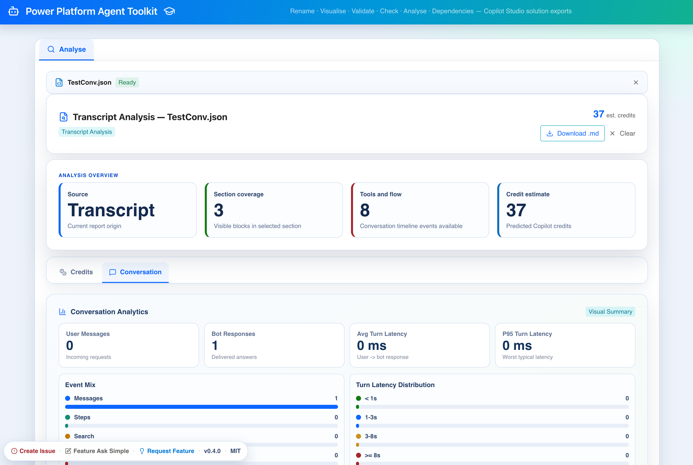
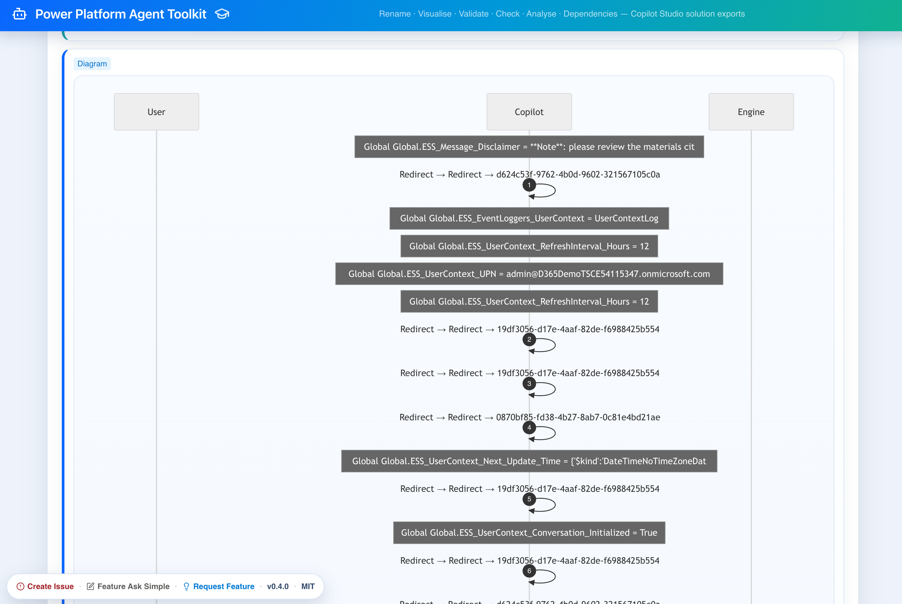
Workflow
Solution or snapshot ZIP, or transcript JSON
Instant structural and risk visibility
Score, improve, and preview before export
Ship an import-safe copy in one step
Architecture
Quality Signals
v0.4.0 with dedicated release notes and summary
Linting, formatting, and 76 automated tests
Prompt-injection and hardcoded-credential checks
MIT licensed with issue and feature request channels
Dev Instance
The dev environment is publicly reachable at pp-agent-toolkit.delightfulground-6e799b84.westeurope.azurecontainerapps.io , but it is password-protected.
Next Step
Use this as your walkthrough layer for demos, internal alignment, and go/no-go delivery reviews.